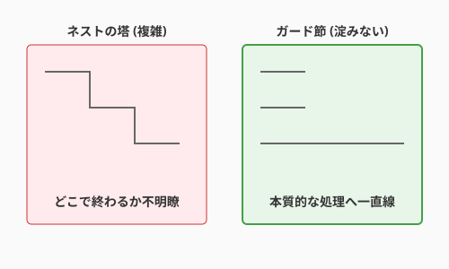

3.2 術式の構築——制御構造と論理の美学
導入: 呪文を編み上げる
前節で学んだ「元素（アルゴリズムとデータ構造）」が魔法の材料だとしたら、それらをどのように組み合わせ、どのような順序で発動させるかを決める手順が「術式（制御構造）」です。
すべてのプログラムは、たった3つの基本構造の組み合わせで表現できます。
- 順次（Sequence）: 上から下へ順番に実行する
- 分岐（Selection）: 条件によって道を変える（
if,switchなど） - 反復（Iteration）: 条件を満たすまで繰り返す（
for,whileなど）
シンプルな原理ですが、これらを組み合わせると無限の複雑さが生まれます。本節では、複雑さを手なずけ、美しく読みやすい術式を構築する技法を学びます。

1. どう設計するか（思考編）
コードを書き始める前に、制御フローを頭の中で（あるいは紙の上で）設計します。
1.1 正常系（ハッピーパス）を先に描く
まず「すべてがうまくいった場合」の流れを明確にします。
クエスト完了の正常系:
1. クエストがアクティブである
2. 英雄のレベルが足りている
3. 期限内である
4. → クエスト完了、経験値付与正常系が明確になれば、それが術式の「幹」になります。
1.2 異常系を列挙する
次に「何が失敗しうるか」を洗い出します。
異常系の列挙:
- クエストがアクティブでない → エラー
- レベルが足りない → エラー
- 期限切れ → エラー異常系は正常系の「枝」として扱います。幹と枝を分離することで、術式の見通しが良くなります。
1.3 制御フローを図式化する
複雑な処理は、書く前に図にすると整理できます。
[開始]
│
▼
[アクティブ?]──No──→[エラー: 非アクティブ]
│Yes
▼
[レベル足りる?]──No──→[エラー: レベル不足]
│Yes
▼
[期限内?]──No──→[エラー: 期限切れ]
│Yes
▼
[クエスト完了処理]
│
▼
[終了]この図を見れば、コードの構造が自然と浮かび上がります。
2. どう表現するか（実装編）
設計した制御フローを、読みやすいコードとして表現する技法を学びます。
2.1 分岐の技法
ガード節（早期リターン）
異常系を関数の冒頭で弾き、正常系をメインの流れとして残す技法です。
# ガード節を使った術式
def complete_quest(quest, hero):
# 異常系を先に弾く（ガード節）
if quest.status != "ACTIVE":
return Error("Quest not active")
if hero.level < quest.required_level:
return Error("Level too low")
if quest.is_expired():
return Error("Quest expired")
# 正常系（ハッピーパス）
quest.status = "COMPLETED"
hero.add_xp(quest.xp_reward)
return Success("Quest completed!")ガード節の利点:
- 正常系がネストせず、左端に揃う
- 各条件が独立して読める
- 条件の追加・削除が容易
条件式の書き方
肯定形を優先する: 人間の脳は否定より肯定を処理しやすいです。
# 否定形（読みにくい）
if not user.is_inactive():
process(user)
# 肯定形（読みやすい）
if user.is_active():
process(user)複雑な条件は名前をつける: 条件式が長くなったら、意図を表す名前に抽出します。
# 条件式が長い（意図が見えにくい）
if user.age >= 18 and user.has_verified_email and not user.is_banned:
allow_purchase()
# 意図を名前にする（読みやすい）
can_purchase = user.age >= 18 and user.has_verified_email and not user.is_banned
if can_purchase:
allow_purchase()
# さらに良い: メソッドに抽出
if user.can_purchase():
allow_purchase()switch/match vs if-else
分岐先が3つ以上あり、同じ変数を比較する場合は switch や match が適しています。
# if-elseの連鎖（冗長）
if status == "PENDING":
handle_pending()
elif status == "ACTIVE":
handle_active()
elif status == "COMPLETED":
handle_completed()
elif status == "CANCELLED":
handle_cancelled()
# match文（Python 3.10+）
match status:
case "PENDING":
handle_pending()
case "ACTIVE":
handle_active()
case "COMPLETED":
handle_completed()
case "CANCELLED":
handle_cancelled()2.2 ループの技法
for vs while の選択基準
| 使い分け | for | while |
|---|---|---|
| 回数が決まっている | ✅ | |
| コレクションを走査 | ✅ | |
| 終了条件が動的 | ✅ | |
| 無限ループ | ✅ |
# 回数が決まっている → for
for i in range(10):
print(i)
# コレクションを走査 → for
for quest in active_quests:
quest.check_deadline()
# 終了条件が動的 → while
while not queue.is_empty():
process(queue.pop())無限ループの安全な書き方
無限ループは意図的に使う場面があります。必ず脱出条件を明示します。
# ゲームループの例
while True:
event = get_input()
if event == "QUIT":
break # 明確な脱出条件
update_game_state(event)
render()break と continue
- break: ループを完全に抜ける
- continue: 今回のイテレーションをスキップし、次へ進む
# continueで不要な処理をスキップ
for quest in all_quests:
if quest.is_completed():
continue # 完了済みはスキップ
# 未完了クエストの処理
check_deadline(quest)
notify_hero(quest)再帰という選択肢
木構造やグラフの探索など、自己相似的なデータには再帰が自然です。
# ディレクトリ内のファイルを再帰的に取得
def find_all_files(directory):
files = []
for item in directory.contents:
if item.is_file():
files.append(item)
elif item.is_directory():
files.extend(find_all_files(item)) # 再帰呼び出し
return filesただし、再帰はスタックオーバーフローのリスクがあります。深さが不明な場合はループに変換するか、末尾再帰最適化を意識します。
2.3 例外処理の技法
プログラムの実行中に異常が発生したとき、どのように対処するかを決める仕組みが例外処理です。例外処理を理解するには、制御の流れ（どこで・どう対処するか）とエラー情報の渡し方（何を使って伝えるか）の2つの軸で整理すると見通しが良くなります。
制御の流れの三つの型
エラーが発生したとき、プログラムの制御がどう動くかは大きく3つに分類できます。
| 型 | 仕組み | 代表例 |
|---|---|---|
| 例外機構によるジャンプ | エラー発生地点から、あらかじめ登録されたハンドラへ制御が飛ぶ | try-catch（Java, Python, C#） |
| 条件分岐による局所判定 | 戻り値やフラグを if 文等でチェックし、その場で分岐する |
C言語のエラーコード判定、Goの if err != nil |
| 呼び出し元への委譲 | 関数内では対処せず、エラー情報を戻り値として返して判断を委ねる | Rustの Result<T, E> + ? 演算子 |
それぞれの制御フローを図で見てみましょう。
型1: 例外機構によるジャンプ
呼び出し元 呼び出し先
┌──────────────┐ ┌──────────────┐
│ try: │ │ │
│ func() ───────────→ │ 処理実行 │
│ except: │ ←─────── │ raise Error │（ジャンプ！）
│ 回復処理 │ └──────────────┘
└──────────────┘エラーが起きると、通常の実行順序を飛び越えて catch/except ブロックに制御が移ります。関数の呼び出し階層を何段でも遡れるのが特徴です。
# Python: 例外機構によるジャンプ
def connect_database():
try:
return Database.connect(config)
except ConnectionError as e:
# ここに制御がジャンプする
raise DatabaseUnavailable(f"Cannot connect: {e}")型2: 条件分岐による局所判定
┌──────────────────────────┐
│ result = func() │
│ if result == ERROR: │──→ エラー処理
│ ... │
│ else: │──→ 正常処理
│ ... │
└──────────────────────────┘呼び出し直後にその場でチェックします。制御のジャンプは起きず、通常の順次実行の中で分岐するだけです。
// C言語: エラーコードを条件分岐で判定
int result = open_file("data.txt");
if (result == -1) {
printf("Failed to open file\n");
return EXIT_FAILURE;
}
// 正常処理を続行型3: 呼び出し元への委譲
関数A 関数B 関数C
┌────────────┐ ┌────────────┐ ┌────────────┐
│ B()を呼ぶ │ │ C()を呼ぶ │ │ エラー発生 │
│ Err→処理 │←── │ Err→そのまま │←── │ Err を返す │
│ │ │ 返す │ │ │
└────────────┘ └────────────┘ └────────────┘関数Cはエラーを返すだけ。関数Bも自分では処理せずそのまま返す。最終的に関数Aが判断します。「誰が責任を持つか」を呼び出し階層の中で選べる柔軟な方式です。
// Rust: Result型 + ?演算子で呼び出し元に委譲
fn load_quest(id: u32) -> Result<Quest, QuestError> {
let data = read_file(id)?; // エラーなら即座に返す（?演算子）
let quest = parse(data)?; // ここも同様
Ok(quest) // 成功時のみここに到達
}エラー情報の伝え方
制御の流れとは別に、「エラーの内容をどのような形で伝えるか」にも複数の方法があります。
| 方法 | 仕組み | 言語例 |
|---|---|---|
| 例外オブジェクト | エラーの種類・メッセージ・スタックトレースをオブジェクトに格納して throw/raise する |
Java, Python, C# |
| Result / Either 型 | 成功値とエラー値のどちらかを保持する型で返す。型システムが処理漏れを検出できる | Rust (Result<T, E>), Haskell (Either) |
| エラーコード（整数値） | 関数の戻り値として整数を返し、0 なら成功、それ以外はエラー番号を示す | C, POSIX API |
| 複数戻り値 | 正常値とエラー値をタプルや多値で同時に返す | Go (value, err) |
| Option / Maybe 型 | 「値がある（Some）」か「ない（None）」かだけを表現する。エラーの詳細は持たない | Rust (Option<T>), Haskell (Maybe) |
それぞれの方法を具体的なコードで見てみましょう。
# 例外オブジェクト（Python）
# → エラーの種類を型で、詳細をメッセージで伝える
raise QuestNotFound(f"Quest {quest_id} does not exist")// Result型（Rust）
// → 成功(Ok)かエラー(Err)かを型で保証。処理し忘れるとコンパイル警告
fn find_user(id: u32) -> Result<User, UserError> {
match database.query(id) {
Some(user) => Ok(user),
None => Err(UserError::NotFound(id)),
}
}// 複数戻り値（Go）
// → 値とエラーを同時に返す。慣習的にerrをチェックしてから値を使う
func findUser(id int) (*User, error) {
user, err := database.Query(id)
if err != nil {
return nil, fmt.Errorf("user %d not found: %w", id, err)
}
return user, nil
}// エラーコード（C）
// → 整数値で成否を返す。詳細はグローバル変数errnoに格納される
int fd = open("quest.dat", O_RDONLY);
if (fd == -1) {
perror("open failed"); // errnoから詳細メッセージを表示
}どの方法にも一長一短があり、「これが唯一の正解」というものはありません。使用する言語の慣習やチームの方針に沿って選ぶことが大切です。
例外処理の実践的なコツ
ここからは、特に例外機構（try-catch）を使う場合の実践的な技法を紹介します。
try-catch は回復できる場所に書く
例外をキャッチするのは、そのエラーに対して意味のある回復処理を行える場所に限ります。
# 改善前: 例外の握りつぶし（何が起きたかわからない）
def process_quest(quest_id):
try:
quest = load_quest(quest_id)
execute(quest)
except Exception:
pass
# 改善後: 回復できるエラーだけをキャッチし、それ以外は上位に伝播
def process_quest(quest_id):
try:
quest = load_quest(quest_id)
except QuestNotFound:
logger.warning(f"Quest {quest_id} not found, skipping")
return
execute(quest) # ここで発生した例外は上位に伝播する早期失敗（Fail Fast）で原因を特定しやすくする
入力の検証は関数の冒頭で行い、おかしな値を早い段階で検出します。処理が進んでから発覚するほど、原因の特定に手間がかかります。
def create_hero(name, level):
# 入力検証を最初に行う（早期失敗）
if not name:
raise ValueError("Name cannot be empty")
if level < 1 or level > 100:
raise ValueError(f"Level must be 1-100, got {level}")
# 検証を通過したら本処理
return Hero(name=name, level=level)3. QuestForgeで実践
これまで学んだ技法を、QuestForgeのアイテム取得処理で実践してみましょう。
Before: ネストの深い術式
def pickup_item(hero, item, area):
if area.is_safe:
if hero.inventory.has_space():
if item.is_pickable:
if hero.can_carry(item.weight):
hero.inventory.add(item)
return "Picked up!"
else:
return "Too heavy"
else:
return "Cannot pick this up"
else:
return "Inventory full"
else:
return "Area is dangerous"改善の余地:
- 正常系が最も深いネストに埋もれている
- 条件の対応関係が追いにくい
- 新しい条件を追加しにくい
After: ガード節による再構築
def pickup_item(hero, item, area):
# ガード節: 異常系を先に弾く
if not area.is_safe:
return "Area is dangerous"
if not hero.inventory.has_space():
return "Inventory full"
if not item.is_pickable:
return "Cannot pick this up"
if not hero.can_carry(item.weight):
return "Too heavy"
# 正常系: ハッピーパス
hero.inventory.add(item)
return "Picked up!"改善点:
- 正常系が最も浅い階層に
- 各条件が独立して読める
- 新しい条件の追加が容易（ガード節を1つ追加するだけ）
まとめ
- 設計が先、実装は後: 正常系を描き、異常系を列挙し、図式化してからコードを書く
- ガード節で幹と枝を分離: 異常系を先に弾き、正常系を際立たせる
- 条件には名前をつける: 複雑な条件式は意図を表す名前に抽出する
- ループは目的で選ぶ: for は回数・走査、while は動的条件
- 例外処理は制御の流れ×情報の渡し方で整理: ジャンプ・条件分岐・委譲の3型と、例外オブジェクト・Result型・エラーコード等の伝達手段を区別する
- try-catch は回復できる場所で: 握りつぶさず、意味のある回復処理ができる場所で使う
- 早期失敗で原因を特定しやすく: 入力検証は関数の冒頭で
AIへの詠唱例
この関数のネストを解消し、ガード節を使ってリファクタリングしてください。
正常系（ハッピーパス）が最も浅い階層に来るようにしてください。
[コードを貼り付け]以下の条件式に意図を表す名前をつけて、読みやすくリファクタリングしてください。
`if user.age >= 18 and user.has_license and not user.is_suspended:`この関数の例外処理を見直してください。
握りつぶしている箇所があれば指摘し、適切な処理方法を提案してください。
[コードを貼り付け]さらに学ぶためのリソース
書籍
- 📚 Edsger W. Dijkstra他『構造化プログラミング』サイエンス社: 制御構造の原典。goto文を超えた構造化の思想を学べる古典。
- 📚 Dustin Boswell, Trevor Foucher『リーダブルコード』オライリー: 可読性の高いコードを書くための実践的なテクニック集。ガード節や条件式の書き方も詳しい。
- 📚 Martin Fowler『リファクタリング 第2版』オーム社: 制御構造の改善パターンを体系的に学べる。第5章で詳しく扱う。
論文
- Edsger W. Dijkstra (1968) "Go To Statement Considered Harmful," Communications of the ACM, Vol.11, No.3. — 構造化プログラミングの出発点となった歴史的書簡。
執筆メモ:
- 執筆日時: 2026-01-28
- 構成変更: 「設計→実装」の流れで再構成、評価は別節へ分離
- 実装技法: 分岐・ループ・例外処理の3カテゴリで整理